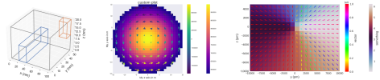
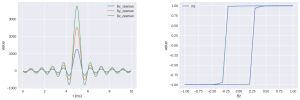

Ubermag - Features and packages¶
Ubermag is a collection of several independent packages that can be used
independently as well as in combination. The whole set of packages – the
ubermag meta-package – is tight to micromagnetic simulations. The
individual sub-packages can be used in other fields, e.g. fluid dynamics.
Finite-difference fields – discretisedfield¶
Three-dimensional finite-different scalar or vector fields independent of the underlying physics
It provides common field operations such as
Mathematical operations (standard operations, derivatives, integration, …)
Specific tools, e.g. topological charge density (
discretisedfield.tools)Visualisation with
matplotlibandk3dReading and writing
vtk,ovf, andhdf5files
Possible applications are amongs others
Micromagnetics
Fluid dynamics
Micromagnetic problem description – micromagneticmodel¶
Physics of the micromagnetic system
Energy equation (Exchange energy, Zeeman energy, DMI, …)
Dynamics equation (damping, precession, currents, …)

Magnetic systems (left-to-right): Skyrmions, vortex, Bloch point [renderings created with Blender]¶
OOMMF-based micromagnetic simulations – oommfc¶
An Object Oriented MicroMagnetic Framework OOMMF calculator for computational magnetism models defined with
micromagneticmodel
Analysis of micromagnetic simulations – micromagneticdata¶

Reading scalar simulation data files - ubermagtable¶
Reading scalar data files (OOMMF
.odtand mumax3.txt)Merging multiple tables
Visualisation of scalar table data
micromagnetictests¶
tests for
oommfc
Typesystem and utilities - ubermagutil¶
Definition of typesystem descriptors and decorators
Documentation inheritance decorators
Determining SI prefixes
Various convenience functions
What is ubermag?¶
As a whole, ubermag is a level of (Python) utilities sitting above (“über”)
existing micromagnetic simulation packages, such as OOMMF and mumax3. We refer
to packages such as OOMMF and mumax3 as the computational backends, or as
(micromagnetic) calculators.
By exposing micromagnetic simulations to the Python ecosystem and integration into Jupyter, all the popular tools used in scientific computing for data analysis, numerical analysis, visualisation, machine learning, etc. become readily available.
The ubermag Python packages allow to specify a micromagnetic problem (without
making use of any micromagnetic calculator). Only when the micromagnetic problem
needs to be solved, the task is delegated to the computational backend.
Design objectives of Ubermag are:
Work towards a common interface (domain spacific language) to multiple simulation packages,
Expose micromagnetic simulations to Python ecosystem,
Make it easier to compare simulation results obtained with different simulation packages, and
Allow execution of micromagnetic simulation in the cloud.
Documentation and tutorials¶
The examples shown in quickstart and the workshop are tight to micromagnetic simulations. Only the more commonly used features are covered in there. Documentation and API Reference provide the full documentation for the individual packages.
If you are new and plan to use Ubermag for micromagnetic simulations please start with the workshop or the quickstart example.
Otherwise, please directly refer to the documentation or the API reference.
ubermag in the cloud¶
If you do not want to install ubermag on your machine, you can use it in the cloud via Binder. This does not require you to have anything installed on your machine and no files will be created. To access it, please use the following badge:
You can setup your own simulation from scratch or upload the notebook you prepared previouly. Please remember to download the notebook after you are done, so that you can upload it again when you start a new online session.
Authors¶
Marijan Beg1, 2, Martin Lang2, 3, Ryan A. Pepper2, Thomas Kluyver4, Jeroen Mulkers5, Jonathan Leliaert5, and Hans Fangohr2, 3, 6
1 Department of Earth Science and Engineering, Imperial College London, London SW7 2AZ, United Kingdom
2 Faculty of Engineering and Physical Sciences, University of Southampton, Southampton SO17 1BJ, United Kingdom
3 Max Planck Institute for the Structure and Dynamics of Matter, Luruper Chaussee 149, 22761 Hamburg, Germany
4 European XFEL GmbH, Holzkoppel 4, 22869 Schenefeld, Germany
5 Faculty of Sciences, Ghent University, Krijgslaan 281, S12, 9000 Ghent, Belgium
6 Center for Free-Electron Laser Science, Luruper Chaussee 149, 22761 Hamburg, Germany.
How to cite¶
If you use Ubermag or any of its sub-packages for your research please cite:
M. Beg, M. Lang and H. Fangohr, “Ubermag: Towards more effective micromagnetic workflows,” in IEEE Transactions on Magnetics.
@article{beg2021,
author = {Beg, Marijan and Lang, Martin and Fangohr, Hans},
journal = {IEEE Transactions on Magnetics},
title = {Ubermag: Towards more effective micromagnetic workflows},
year = {2021},
volume = {},
number = {},
pages = {1-1},
doi = {10.1109/TMAG.2021.3078896}
}
License¶
Licensed under the BSD 3-Clause “New” or “Revised” License. For details, please refer to the LICENSE file.
Acknowledgements¶
Ubermag is a part of the Horizon 2020 European Research Infrastructure OpenDreamKit project (Project ID 676541). This work was supported by the Fonds Wetenschappelijk Onderzoek (FWO-Vlaanderen) through Project No. G098917N (Jeroen Mulkers) and with a postdoctoral fellowship (Jonathan Leliaert).